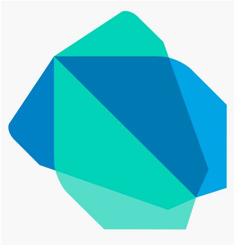

Dart:

Uma linguagem de programação desenvolvida pela Google em 2011, é uma linguagem orientada a objetos, é uma linguagem moderna e fácil de aprender, com ela você pode desenvolver aplicativos mobile e sites web, backend, desktop, Cross-platform e sim ele é muito usado em startups
e empresas que precisam lançar apps rapidamente em diversas plataformas, aplicativos móveis com UI moderna e performance nativa, além de desenvolvimento web e aplicações desktop.